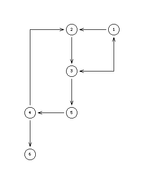
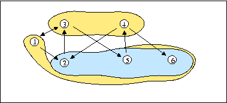

{0,1}-valued digraph
Best unique choice problematics, RuBy methodology, Super strict dominant kernels
A = {1,2,3,4,5,6}, L = {0,1}.

Marc Roubens proposed this example in spring 2004, as support for the discussion of the RuBy methodology.
We may observe two outranking kernels: {3,4} and {1,5,6}, and one outranked kernel: {2,5,6}.

The first choice: {3,4} is clearly not in intersection with the outranked kernel and therefore delivers the RuBy best choice recommendation. We call such kernels super strict outranking.
Following the Electre I methodology, one would collapse the circuit (2,3,5,4,2) and propose more readily these nodes as equivalent best choice recommendations. Here the RuBy recommendation with the super strict outranking kernel concept is more discriminant.